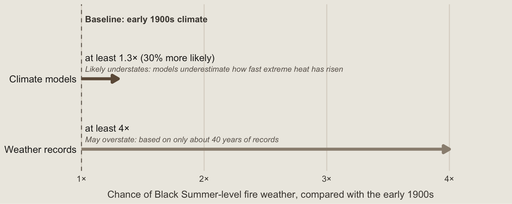

Black Summer wasn’t just bad luck. Climate change loaded the dice.
Compared with the early 1900s, climate change has made fire weather as extreme as the 2019/20 season at least 30% more likely in south-eastern Australia, driven mainly by hotter heatwaves.
climate
bushfires
Author
Miriam Wu
Published
October 11, 2026
The question Black Summer left behind
The 2019/20 Black Summer bushfires devastated south-eastern Australia, killing at least 34 people and destroying around 5,900 buildings (van Oldenborgh et al. 2021). It left many people asking: was it simply an unusually bad season, or has climate change made the hot, dry and windy conditions behind the fires more likely?
Natural climate patterns in the Indian and Southern Oceans helped make 2019 exceptionally dry, so bad luck certainly played a part. The real question, then, is not one or the other, but whether climate change shifted the odds as well. That matters, because if it did, dangerous fire weather could become more common, with real consequences for people living near bushland.
Drawing on a 2021 study by an international team of climate scientists (van Oldenborgh et al. 2021), this post takes a closer look at what the evidence says. Has climate change made fire weather like Black Summer more likely? If so, what is behind the change? And what could it mean for the summers ahead?
Fire weather like 2019/20 is now at least 30% more likely
The study found that fire weather as extreme as Black Summer’s is now at least 30% more likely in south-eastern Australia than it was in the early 1900s. Put simply, in any given year, the odds of experiencing conditions this extreme are now at least 1.3 times what they were a century ago.
To measure fire weather, researchers use the Fire Weather Index, which combines temperature, humidity, wind and rainfall to assess how favourable conditions are for fire to spread. It measures the weather conditions that can drive dangerous fires, not whether a fire will actually start.
How do the researchers know this? They used two approaches (Figure 1). First, they examined weather records dating back to 1979, drawn from a dataset called ERA5, and projected the observed trend backwards. This suggested that fire weather like this has become at least four times as likely. But the record covers only around four decades, making this estimate highly uncertain and potentially too high.
The second approach used climate models: computer simulations that compare the climate of the early 1900s with today’s. These produced a more conservative estimate of at least 30%. However, the models underestimate how quickly extreme heat has increased, so this estimate is likely too low.
Code
library(tidyverse)odds <-tibble(evidence =c("models", "records"),y =c(2, 1),at_least =c(1.3, 4),label =c("at least 1.3× (30% more likely)", "at least 4×"),note =c("Likely understates: models underestimate how fast extreme heat has risen","May overstate: based on only about 40 years of records"))ggplot(odds, aes(y = y)) +geom_vline(xintercept =1, colour ="#7A7268", linetype ="dashed") +annotate("text", x =1.03, y =2.85, hjust =0, size =3.5,fontface ="bold", colour ="#4A453F",label ="Baseline: early 1900s climate") +geom_segment(aes(x =1, xend = at_least, yend = y, colour = evidence),linewidth =1.6,arrow =arrow(length =unit(0.28, "cm"), type ="closed")) +geom_text(aes(x =1.03, y = y +0.30, label = label),hjust =0, size =3.8, colour ="#262422") +geom_text(aes(x =1.03, y = y +0.14, label = note),hjust =0, size =3.1, colour ="#6B645C", fontface ="italic") +scale_colour_manual(values =c(models ="#6E5A47", records ="#9A8E80"),guide ="none") +scale_x_continuous(limits =c(1, 4.3), breaks =1:4,labels =c("1×", "2×", "3×", "4×"),expand =expansion(mult =c(0, 0.02))) +scale_y_continuous(limits =c(0.8, 2.95), breaks =c(2, 1),labels =c("Climate models", "Weather records")) +coord_cartesian(clip ="off") +labs(x ="Chance of Black Summer-level fire weather, compared with the early 1900s",y =NULL) +theme_minimal(base_size =12) +theme(plot.background =element_rect(fill ="#EDEAE3", colour =NA),plot.margin =margin(5, 20, 5, 5),panel.grid.major.y =element_blank(),panel.grid.minor =element_blank(),panel.grid.major.x =element_line(colour ="#DCD6CC"),text =element_text(colour ="#262422"),axis.text.y =element_text(hjust =1, colour ="#262422", size =11,margin =margin(r =8)),axis.text.x =element_text(colour ="#4A453F"),axis.title.x =element_text(size =11, colour ="#4A453F",hjust =0.3, margin =margin(t =8)) )

Figure 1: Both kinds of evidence show that fire weather like Black Summer’s is now more likely than in the early 1900s. Each arrow shows the smallest likely increase, so the true change could be larger. Source: van Oldenborgh et al. (2021).
Neither estimate is exact. The researchers therefore treat 30% as a lower bound rather than a precise estimate. Even this conservative figure suggests that the odds of experiencing extreme fire weather have increased meaningfully. Since fire weather combines heat, dryness and wind, the next question is which of these has changed.
Hotter heatwaves, not drought, shifted the odds
The researchers found that the increase in extreme fire weather was driven mainly by more intense heat, rather than a clear long-term trend towards more severe drought. The two ingredients have changed in very different ways (Table 1).
Extreme heat shows a clear link to climate change. A hot week as extreme as December 2019’s is now at least twice as likely as it was in the early 1900s. Weather records also suggest that a heatwave of this intensity would have been 1–2°C cooler back then. Across most of the researchers’ analyses, rising temperatures explained the largest share of the increase in extreme fire weather, while lower humidity and wind played smaller roles.
Rainfall tells a different story. The researchers found no clear long-term trend towards more extreme dry years or drier months during the fire season. Much of the severe drought in 2019 was driven by natural climate patterns. Unusual conditions over the Indian and Southern Oceans accounted for more than half of the rainfall shortfall between July and December.
Ingredient
What was measured
Change since the early 1900s
Linked to climate change?
Extreme heat
Hottest week of the year, as extreme as December 2019
At least 2× as likely; about 1–2°C hotter (weather records)
Yes, the main driver
Low rainfall
Driest years and driest fire-season months
No clear long-term trend
No clear link; 2019’s drought was largely natural
Fire weather overall
Fire Weather Index, as extreme as 2019/20
At least 1.3× as likely (30% more)
Yes, mainly through heat
Table 1: How each ingredient of fire weather has changed. Heat shows a clear link to climate change; low rainfall does not. Source: van Oldenborgh et al. (2021).
With 2°C of warming, the odds of Black Summer-level fire weather climb further
The odds could rise further as the world warms. Compared with the early 1900s, fire weather as extreme as Black Summer’s is already at least 1.3 times as likely in today’s climate, with around 1.1°C of global warming. If global warming reaches 2°C above pre-industrial levels, the odds would rise to at least four times those of the early 1900s.
This projection comes from just two climate models, as the others did not have the future simulations needed for the analysis. Their most likely figure was closer to eight times as likely. The models also tend to underestimate the rate at which extreme heat is increasing, suggesting that the actual change could be larger.
Weather is only part of the picture
The study examined fire weather, not the fires themselves. It did not assess what ignited individual fires, how much dry vegetation was available to burn, or how effective hazard-reduction burning had been. Its analysis was also limited to forests between the Great Dividing Range and the coast, so the findings may not apply to grasslands or other parts of Australia.
The researchers also note that warnings, planning and community preparedness influenced the impact of the 2019/20 fires. In other words, more extreme fire weather does not automatically mean greater damage: how a fire unfolds, and how well communities are prepared, also matter.
What this means for the summers ahead
So, was Black Summer just bad luck? The evidence suggests it was shaped by both natural climate patterns and a warming climate. Natural patterns helped make 2019 exceptionally dry, but climate change had already shifted the odds. Fire weather like Black Summer’s is now at least 30% more likely than in the early 1900s, driven mainly by hotter heatwaves, and the odds are projected to reach at least four times those of the early 1900s if global warming reaches 2°C (van Oldenborgh et al. 2021).
For people living near bushland, the key takeaway is not that another Black Summer is inevitable, but that the conditions behind it are becoming more likely. A dangerous fire season will still depend on more than weather alone, including where fires start and how well communities are prepared. But understanding how the risks are changing is an important first step towards preparing for the summers ahead.
van Oldenborgh, Geert Jan, Folmer Krikken, Sophie Lewis, et al. 2021. “Attribution of the Australian Bushfire Risk to Anthropogenic Climate Change.”Natural Hazards and Earth System Sciences 21: 941–60. https://doi.org/10.5194/nhess-21-941-2021.